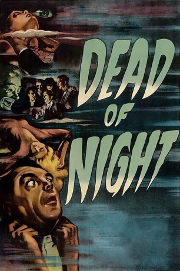
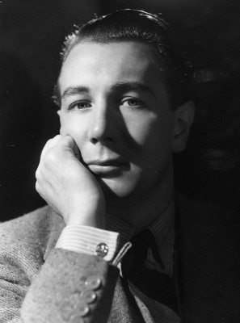

#10022 Traum ohne Ende
 
 IMDB-Wertung: 7.7 / 10
IMDB-Wertung: 7.7 / 10  Metascore: 0
Metascore: 0 
Der Architekt Walter Craig fährt auf einen Anruf hin in ein englisches Landhaus. Nicht nur das Gebäude, sondern auch die Gäste kommen ihm irgendwie bekannt vor. Als er verkündet, das Haus und die Menschen darin aus einem wiederkehrenden Alptraum zu kennen, wird er von einem anwesenden Psychiater nicht Ernst genommen. Doch Craigs Vorahnung, dass sich etwas Schreckliches ereignen wird, wird durch die anderen Gäste gestärkt, die nun ihrerseits von unheimlichen Erlebnissen berichten.
Jahr: 1945
Dauer: 103 Minuten
FSK: 12
Land: England Studio: ArthausTonspuren:
Untertitel:
Auflösung: 1080p (1488x1080) Größe: 7854 MB
Genre: Horror
Regisseur: Alberto Cavalcanti, Charles Crichton, Basil Dearden, Robert Hamer
Drehbuch: John Baines, Angus MacPhail, T.E.B. Clarke, H.G. Wells, E.F. Benson
Soundtrack: Georges Auric
Darsteller:
- Mervyn Johns als Walter Craig (segment Linking Story) / (segment Christmas Party)
- Roland Culver als Eliot Foley (segment Linking Story)
- Mary Merrall als Mrs. Foley (segment Linking Story)
- Googie Withers als Joan Cortland (segment Linking Story) / (segment The Haunted Mirror)
- Sally Ann Howes als Sally O'Hara (segment Linking Story) / (segment Christmas Party)
- Judy Kelly als Joyce Grainger (segment Linking Story)
 Miles Malleson als Hearse Driver (segment Linking Story)
Miles Malleson als Hearse Driver (segment Linking Story)- Esme Percy als Antique Dealer (segment The Haunted Mirror)
- Basil Radford als George Parratt (segment Golfing Story)
- Naunton Wayne als Larry Potter (segment Golfing Story)
- Peggy Bryan als Mary Lee (segment Golfing Story)
-  Michael Redgrave als Maxwell Frere (segment The Ventriloquist's Dummy)
- Garry Marsh als Harry Parker (segment The Ventriloquist's Dummy)
- Peter Jones als Fred - Barman (segment Golfing Story) (uncredited)
- John McGuire als Hugo Fitch (segment The Ventriloquist's Dummy') (uncredited)
- Frederick Valk als Dr. Van Straaten (segment Linking Story) / (segment The Ventriloquist's Dummy)
- Anthony Baird als Hugh Grainger (segment Linking Story)
- Robert Wyndham als Dr. Albury (segment Linking Story)
- Michael Allan als Jimmy Watson (segment Christmas Story)
- Barbara Leake als Mrs. O'Hara (segment Linking Story)
- Ralph Michael als Peter Cortland (segment The Haunted Mirror)
- Allan Jeayes als Maurice Olcott (segment The Ventiloquist's Dummy)
- Elisabeth Welch als Beulah (segment The Ventriloquist's Dummy)
- Hartley Power als Sylvester Kee (segment The Ventriloquist's Dummy)
- Magda Kun als Mitzi (segment The Ventriloquist's Dummy)
- Renee Gadd als Mrs. Craig (segment Linking Story)
- Patrick Aherne als Doctor at Psychiatric Hospital (segment The Ventriloquist's Dummy) (uncredited)
- Paul Bonifas als French Nightclub Patron (segment The Ventriloquist's Dummy) (uncredited)
- Barry Ford als Minor role (uncredited)
Datei: X:\1900-1949\Traum ohne Ende (1945, FSK12, 1488x1080).mkv seit 20.11.2018
Festplatte: HD 1900-1970
 Es gibt insgesamt 80 Filme in der Gruppe '1900-1949'
Es gibt insgesamt 80 Filme in der Gruppe '1900-1949'